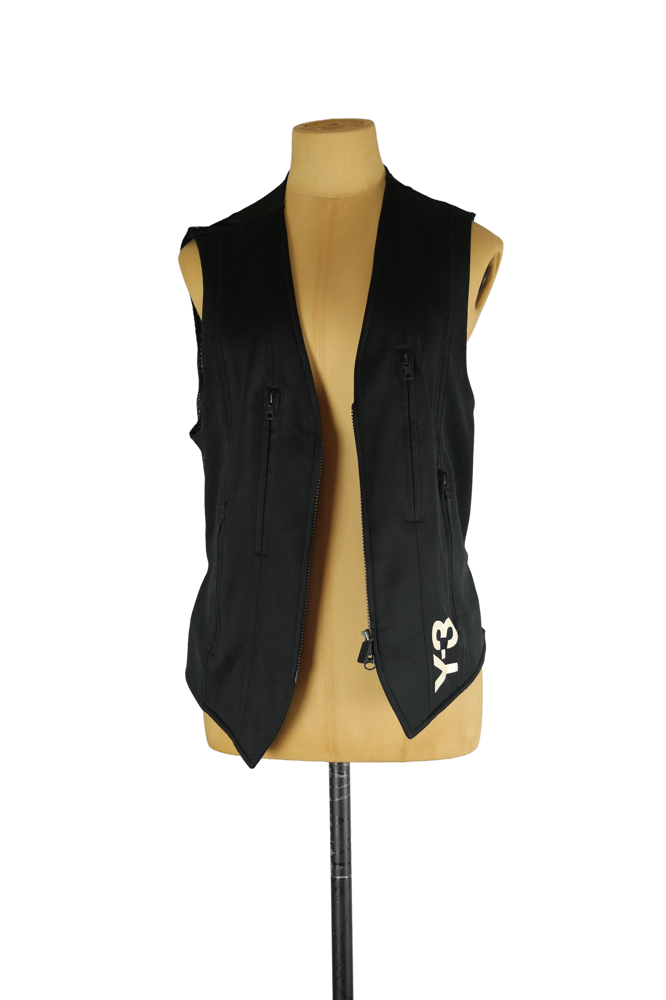

1 / 16Aus dem kuratierten Archiv von Disorder119. Ärmellose Zip-Weste aus der frühen Y-3 Phase von Yohji Yamamoto in Zusammenarbeit mit adidas, datiert auf das Jahr 2006. Das Piece steht exemplarisch für die funktional geprägte Designsprache der frühen Kollektionen. Die Weste ist körpernah geschnitten und folgt einer klaren, vertikalen Linienführung. Das matte, technische Obermaterial wird durch ein atmungsaktives Mesh auf der Rückseite ergänzt, was dem Entwurf eine sportlich-industrielle Anmutung verleiht. Mehrere vertikal platzierte Reißverschlusstaschen strukturieren die Front. Der durchgehende Frontreißverschluss endet in einer leicht spitz zulaufenden Saumform. Auf der Vorderseite ist das Y-3 Logo dezent platziert. Rückseitig sorgt ein verstellbarer Riegel mit Druckknöpfen für zusätzliche Anpassungsmöglichkeiten. Ein funktionales Archiv-Piece aus der frühen Y-3 Ära. Details: Marke: Y-3 (Yohji Yamamoto x adidas) Farbe: Schwarz Größe: S Passform: schmal geschnitten Verschluss: Reißverschluss Material: Obermaterial Polyester; Mesh-Einsätze Polyester Herstellungsland: China Kollektion/Jahr: 2006 Fotografie & Passform: Das Kleidungsstück wurde auf unserer Standard-Schneiderpuppe fotografiert, die wir zur konsistenten Darstellung aller Kleidungsstücke verwenden. Maße der Schneiderpuppe: Brustumfang 89 cm Taillenumfang 66 cm Hüftumfang 89 cm Schulterbreite 38 cm Diese Maße dienen ausschließlich der visuellen Einordnung und werden nicht als Artikelmaße bezeichnet. Zustand: Gebraucht, guter Zustand mit leichten, altersüblichen Tragespuren. Rechtliche Hinweise: Verkauf als gebrauchtes Kleidungsstück. Die Beschreibung erfolgt nach bestem Wissen und Gewissen. Farbnuancen und Oberflächenwirkungen können aufgrund von Lichtverhältnissen bei der Fotografie sowie unterschiedlicher Bildschirmdarstellungen leicht vom Original abweichen. Disorder119 steht für sorgfältig kuratierte Designerstücke mit Fokus auf Authentizität, Qualität und zeitlose Relevanz.
Shop-Kontakt noch nicht eingerichtet: WhatsApp-Nummer oder E-Mail-Adresse fehlen in SHOP_CONFIG (index.html).
Disorder119 · Kuratiertes Archiv für Designer-, Vintage- und Contemporary-Mode. Jedes Stück wird einzeln ausgewählt, fotografiert und beschrieben.